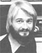

Copthorne Macdonald is the inventor of slow-scan television . . . a method of
amateur radio transmission that allows ham operators to both hear and see each
other during shortwave broadcasts.
It's sobering to know that nine-tenths of our present decade has already passed Into history. Especially whenupon lookIng backwe have to realize that the few faltering steps forward taken by humanity In the 70's were accompanied by a far greater number of possibilities that slipped by without ever being brought to fruition. The fact is that both committed time and focused energies are necessary to convert any worthwhile potential Into actuality, andbecause these necessities are all too rarethere are limits to what can be accomplished.
Butin this final year of the decadethere are several communications-orient. ad projects that will be bidding for our time and energy. Perhaps you'll consider making one of them "your thing" in 1979.
The first of these calls for commitment involves two international conferences that are scheduled to be held In Europe this year the U.N. Conference of Science and Technology for Development (UNCSTD)which will meet in Vienna between August 21 and 30and the World Administrative Radio Conference (WARC) that's scheduled to begin next September in Geneva. At UNCSTD, world governments will present their views upon how science and technology can (and should) be used to promote the development of poorer countries. And, at WARC, these same governments will review frequency allocations In the radio spectrum and revise the ground rules that discipline International radio communication.
The tacit assumption underlying both of these conferences is that governmental policy reflects the wants and needs of the people governed. Of course, we know that this is, all too frequently, not the case. In fact, the policies of most governments actually tend to reflect and support the interests of the more powerful elements within the country ... while the needs of poorer and less powerful groups are, many times, ignored.
Back in 1976, at HABITAT (the United Nations Conference on Human Settlements ... which was held In Vancouver), an attempt was made to correct this Imbalance. At that time, a Non-Governmental Organizations Forum was established in an attempt to provide the conference with peopleoriented Input.
And, a similar NGO Forum is planned for the UNCSTD. Better yet, there is a movement afoot to insure that this Forum will include the matters of communications technology and communications access in their presentation. Karen Paulsell is coordinating efforts to set up conference workshops on communications-related topics and Is also heading up an effort to write position papers for presentation at the NGO Forum (and perhaps at the WARC, also). A West Coast meeting of interested parties will likely be held this winter. If you'd like to be a part of this movement, write Karen for details-filling her In on your interests and the kinds of help you can offer-at 2768 22nd Street, San Francisco, California 94110, or phone her at (416) 285-0294.
The Humanity Foundation is a Vancour-based organization that lists Buckminster Fuller, Theodore Roszak, and a number of today's religious leaders (including Stephen Gaskin of The Farm) among its directors. The Foundation is organizing a bold and daring World Symposium on Humanityto be held simultaneously in Toronto, Los Angeles, and London-from April 7 through 14. And the speakers listed for this symposium include many of the people who have helped raise our collective consciousness in recent years ... such folks as Paul Ehrlich, Carl Rogers, Ralph Nader, Marshall McLuhan, Ram Dass, Aurelio Peccei, and Elizabeth Kubler-Ross, to name just a few.
Best of all, the three symposium locations will be interlinked by satellite-relayed video for several hours each day, to allow the separate groups to interact. Herb Clark (VE7COC) of the Humanity Foundation has approached us Now Directions Radio folks and asked if we would help set up and run amateur radio stations at each of the three locations. (By the way, one of the messages Implicit in this positive use of the electronic media is that perhaps it's time to stop condemning all high technology as antihuman. Nuclear reactors, production lines, and commercial television may be examples of destructive technology, but two-way electronic communication, antibiotics, and offset printing presses can be used to help enhance and upgrade the quality of human experience.)
In order to avoid the strings that are often attached to corporate financial sup. port, the Symposium's cost will be shared by all of those people who choose to attend It. Because of this, the registration fee will be $200 ... which represents more than a trivial level of commitment! For further information on the World Symposium on Humanity-or to offer to help with the ham radio stations that will be a part of this event-write to Herb Clark, The Humanity Foundation, 2173 W. 4th Avenue, Vancouver, British Columbia, Canada V6K 1N7, or call Herb at (604) 736-2547.
Yet another exciting task planned for the coming year will be the launching of the Alternative News Net that was pro. posed by George Wood in MOTHER NO. 51. George has been busily writing articles, information sheets, and letters in the last few months to help bring this net. work about. While any ham will, of course, be welcomed into the not, we expect that the most fruitful segments of the operation will involve those stations which have established contact with at least one person in the alternative media ... such as the news director of a community FM station or the editor of an alternatives-oriented newspaper, magazine, or newsletter. If enough of our stations are able to supply this kind of media link, we should have plenty of interesting Information to feed into the net.
Meanwhile, the number of sunspots continues to climb, and we are approaching the improved conditions that will be necessary to make long distance branches of the network possible. If you'd like to participate in this "gathering", contact either me or George Wood (SMOIIN). George's address is Kungshamra, 31/107, 171 70 Solna, Sweden.
Finally, lot me pass along an Idea that's the brainchild of Rick Glaese (WB7UOD). Rick Is very Interested In the communications problems of the alternative community and Is working to solve these difficulties by means of ham radio. (Rick Is also helping Herb Clark got those ham stations set up at the three Symposium locations.) Glaese proposes the establishment of a "communications networking center" or "communications collective", whichby means of such technological advances as WATS lines, computer data storage, and radio-could provide needed communication services to the whole alternative community. The specifics of Rick's Idea, including the all important question of where the money will come from, are still up in the air. But if you have any thoughts on the subject, I urge you to write to Glaese at 2324 N.W. Columbia, East Wenatchee, Washington 98801.
Peace,
Cop Macdonald (VE1BFL)
99 Fitzroy St.
Charlottetown
Prince Edward Island
Canada CIA I R6
Now Directions Radio is an international network of radio amateurs concerned with those ways of using ham radio (and relat ed modes of communicating) that promote our own growth as Individuals, and which we perceive as helping to create a more aware, more caring, and more re sponsible human society. We encourage all who share these Interests to work with us. A current schedule of on-the-air activities Is Included In each issue of the bi-monthly New Directions Roundtable Newsletter published by Randy Brink (WDOHNF) and "Boll Bogardus (W6HSE) as a service to the rest of us. Send one 9-1/2- by 4-inch, self-addressed, stamped envelope (or 25c) for each issue desired to Randy Brink, Star Route 2280, Space 54, Woodland Park, Colorado 80863.
|
 photo by madalene macdonald |
|
|